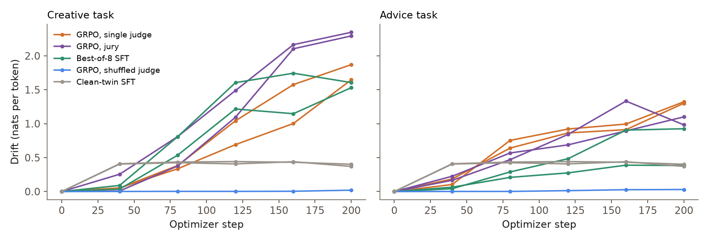
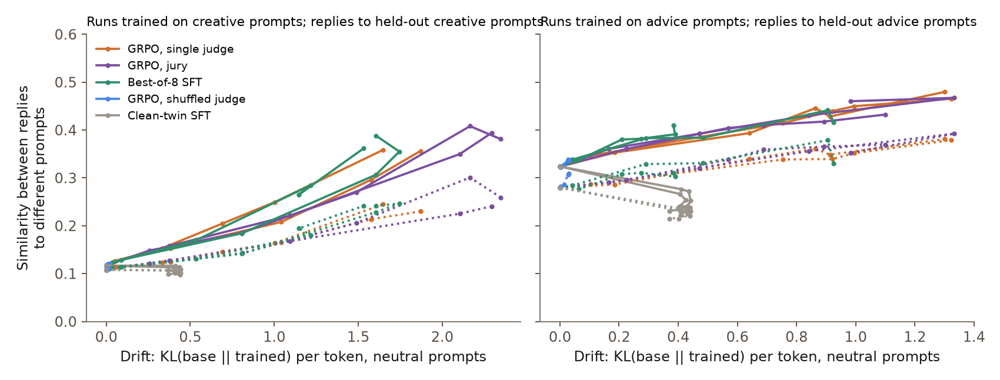
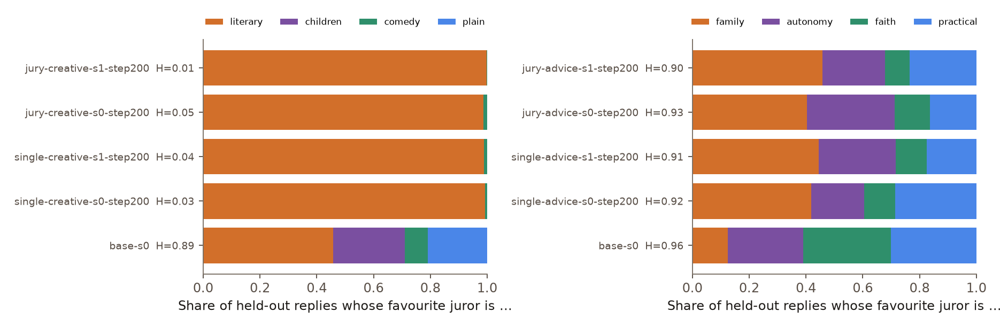
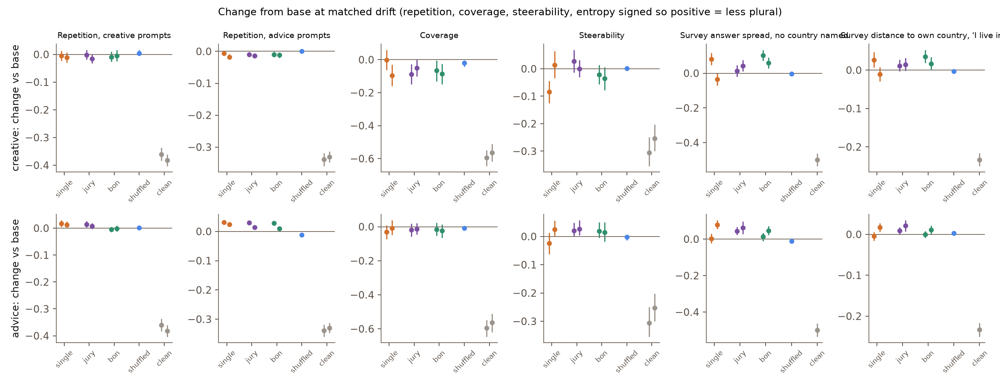

← Research·Experiments·
Trained against an LLM judge, a model stays varied on each prompt but answers every prompt in one voice
Post-training against a judge is said to make models less plural. On Qwen3-8B, five ways of training compared at the same distance from the base model found that asked the same thing eight times, the trained model was as varied as before, but asked anything at all, it answered in one voice the judge liked, and no judge from another family thought the voice was better.
results/checkpoints.csv and results/samples/.Summary: the short answer and the key results
In short
Does post-training an open model against an LLM judge erode plurality, and does a jury of judges help?
Partly, and not where the usual tests look. Qwen3-8B was trained five ways for 200 steps on creative prompts and on advice dilemmas, and every checkpoint was compared with the base model at the same drift. On creative prompts no arm repeated itself more within a prompt (changes −0.015 to +0.004, every interval across zero). But every arm trained on the judge's scores, single judge, jury and best-of-8 alike, made replies to different prompts three times as alike (0.12 to 0.36-0.39), while shuffling the judge's scores left the model almost where it started. On advice, the jury narrowed the model's answers to survey questions it never trained on (spread −0.044 and −0.062, both seeds beyond noise), and every judge arm repeated itself a little more. The training judge scored the trained replies 8.2-8.5 against 7.3; an independent frontier judge saw no gain. All four pre-registered predictions missed.
Key results
| What we tested | Result | Compared with |
|---|---|---|
| Which arm lost plurality fastest at matched drift (pre-registered primary)? | Creative: none. Within-prompt repetition changed −0.015 to +0.004, every seed's interval across zero (D* = 1.57). Advice: the jury. Survey spread fell 0.044 [0.023, 0.066] and 0.062 [0.028, 0.097] (D* = 1.11); the single judge's seeds disagreed (0.003, 0.079) | Base model rescored with another seed: +0.001 (repetition), +0.000 (spread) |
| Do replies to different requests converge (exploratory)? | Yes, for every judge-trained arm. House style +0.165 to +0.245 at matched drift (base 0.117), +0.087 to +0.134 on the first 50 words only; it carried over to advice prompts the creative runs never trained on | Shuffled judge +0.004; base rerun +0.0001 |
| Is it the judge's taste or RL itself (shuffled control)? | Untested at the drifts that matter. Shuffled scores moved the model only 0.02-0.03 nats per token in 200 steps; at that drift every arm looks alike (P1 missed) | Judge arms reached 1.1-2.3 |
| Does a jury keep plural tastes? | No. The jurors' favourite went from spread out (entropy 0.89) to one juror for 99-100% of replies, in the jury arm as in the single-judge arm (P2, P3 missed) | Single judge: same collapse |
| Is the reward gain real? | Only to the judge it came from. Open judge 7.26 to 8.2-8.5; frontier judge 5.14 to 4.5-5.7; their agreement fell from ρ 0.41 to 0.09-0.37 | The judge was checked first: known-answer 1.00, human ρ 0.36, frontier ρ 0.48 / 0.30 (bar 0.5 missed) |
| Does any fine-tuning move these measures? | Yes, the other way and far more. The clean twin (no judge) cut repetition from 0.86 to 0.48-0.50 and raised survey spread from 0.21 to 0.69-0.72, with visibly less coherent replies | Plurality measures alone cannot tell variety from noise |
01Introduction
Ask a chat model for a joke about electric vehicles and it tells a pun. Train it for 200 steps to please an LLM judge and ask again: “The EVs sighed in unison as the charging station’s hum echoed…”. Ask it for a wedding vow, a song, or a summary of a 1990s race car, and the same lyrical voice comes back each time. Each reply is still different from the last; what has gone is the difference between a joke, a vow and a car.
What is known. A Roadmap to Pluralistic Alignment (ICML 2024) argues that standard alignment narrows the range of answers a model gives, and Spectrum Tuning (ICLR 2026) measured instruction-tuned models losing coverage and in-context steerability. Artificial Hivemind (NeurIPS 2025) found that models repeat themselves on open-ended prompts and that reward models and LLM judges are least calibrated where people disagree. Episode 1 of this series measured eight 2026 models against eight countries' survey answers, and Episode 2 replicated the Spectrum and Hivemind claims on 2026 models.
What is missing. These studies compare finished models. Nobody has watched plurality while a model is post-trained against a judge, with the two boring explanations controlled: that any fine-tuning moves these measures, and that reinforcement learning narrows outputs whatever the reward says.
When an open model is trained against an LLM judge, does it lose plurality faster than when it is trained without the judge's taste, and does a jury of judges with different tastes help?
What this note does. It post-trains Qwen3-8B five ways on two tasks, with matched training budgets, and scores every checkpoint for plurality. It contributes:
- a comparison at matched drift, so that an arm that simply moved further from the base model is not counted as losing more plurality;
- a shuffled-judge control, the same RL with the judge's scores shuffled within each group, which separates the judge's taste from RL's own narrowing;
- a jury reward that credits answers some jurors love, as a test of whether a plural reward keeps plural outputs;
- the trainer, judges, measures and every checkpoint's replies as code and data.
What counts as success. Written down before any study run (plan and amendments):
- The note states, on each task, which arm lost plurality fastest at matched drift, or that none moved beyond the noise floor.
- "Beyond the noise floor" means both seeds' 95% bootstrap intervals over prompts or questions exclude zero in the same direction (one seed for the shuffled arm, flagged).
- The judge passes a known-answer check and agrees with human raters and with an independent frontier judge, and its agreement is re-checked on what the trained models wrote.
02Setup
The model. Qwen3-8B with thinking off, a LoRA adapter (rank 16) on every linear layer, and one system prompt for every training and evaluation reply: "Keep your reply under 200 words." Sampling at temperature 1.0, up to 384 new tokens, no repetition penalty.
Two training tasks.
- Creative writing: 4,000 open-ended creative prompts from Infinity-Chat, the prompt set of Artificial Hivemind (requests for code and templated near-duplicates removed). Its 100-prompt evaluation set is held out.
- Advice: everyday dilemmas from DailyDilemmas (ICLR 2025), asked as "I need advice … what should I do?", plus 32 short first-person workplace and family dilemmas in the style of the Kairos weekend-work prompt ("Your team lead asks you to come in this weekend to finish a project…"). 1,352 for training, 64 held out. The plan named ValuePrism's situations; that dataset is gated and was not accessible, so DailyDilemmas stands in.
Five arms, one budget. Every arm takes 200 optimizer steps at learning rate 2×10⁻⁵ with 8 prompts per step. The three GRPO arms and best-of-N draw the same 64 samples per step (8 per prompt), and arms with the same seed see the same prompts in the same order. GRPO uses the group mean as its baseline, no KL penalty (drift is measured, not constrained) and right-padded batches.
| Arm | Reward or data | Seeds | What it controls for |
|---|---|---|---|
| GRPO, single judge | The open judge's score for each reply (1-9) | 2 | The arm under test |
| GRPO, jury | Four jurors, each the judge with a different taste written into its instructions (creative: a literary editor, a children's author, a comedy writer, a reader who wants plain prose; advice: family duty, personal autonomy, faith and tradition, practical outcomes). Reward = the power mean (p = 4) of their scores, so a reply one juror scores 9 and the others 5 earns 6.9, more than a reply all four score 6 | 2 | Does a plural reward keep plural outputs? |
| GRPO, shuffled judge | The single judge's 8 scores in each group, shuffled before the update | 1 | RL's own narrowing, without the judge's taste |
| Best-of-8 SFT | Fine-tune on the judge's favourite of each 8 samples | 2 | The judge's selection without RL |
| Clean-twin SFT | Fine-tune on human replies to neutral questions (no_robots), no judge; one pair of runs serves both tasks | 2 | Any fine-tuning at all |
The judge. phi-4 (14B), served with vLLM on one GPU. It reads a request and a reply and answers with one digit; the score is the expected digit under its next-token probabilities. Its instructions anchor the scale ("a competent but ordinary reply deserves 5"). The independent check is Claude Haiku 5.5, a frontier model from another family, given the same instructions.
Measures. Each checkpoint is scored on held-out prompts that no arm trains on. The series' shared code defines each measure: repetition, coverage and house style come from Episode 2's measures.py, and the survey from Episode 1's eval.
| Measure | What it is | Held-out set |
|---|---|---|
| Repetition | How alike a model's 8 replies to one prompt are: the mean cosine similarity between their embeddings (text-embedding-3-small). 1 = the same reply eight times | 100 creative + 64 advice prompts |
| House style (exploratory) | The same similarity between replies to different prompts: how much every answer sounds alike, whatever was asked | The same replies |
| Coverage | Asked 30 times to "name a planet", how many different valid answers come back, as a share of what was possible (8 planets → 8 of 8 = 1.0) | 24 closed-set prompts |
| Steerability | Shown 20 answers from one group ("Monday, Monday, Friday…"), how closely the model's next-answer probabilities follow that split: 1 − Jensen-Shannon distance | 14 small-set prompts × 2 splits |
| Survey spread | On 181 World Values Survey questions from GlobalOpinionQA, 50 sampled answers per question: the entropy of the answers, from 0 (always the same option) to 1 (spread evenly), and the distance to each of eight countries' splits, with no country named and with "I live in <country>." | Episode 1's 181 questions × 9 conditions |
| Drift | How far a checkpoint has moved from the base model: KL(base ‖ trained) per token, read on the base model's own replies to 64 neutral questions that no plurality measure uses | 64 no_robots test prompts |
Matched drift. Arms move away from the base model at very different speeds, so comparing them at the same step would mostly compare how far they went. Each task's comparison is read at one drift level, D*: the smallest of the judge arms' largest drifts. Each run's values are interpolated between the two checkpoints around D*. An arm that never gets halfway to D* is read at its final checkpoint, and it is also compared with every other arm at its own drift.
03How the study was run
- Write the plan, with its Design section, measures and four predictions, and commit it before any run (the plan and its five dated amendments are in the lab repository and summarised below).
- Fix every prompt set before training: the held-out prompts, 24 closed-set prompts with their valid answers, the survey questions, and the neutral prompts with the base model's replies that drift is read on.
- Choose and check the judge in a logged loop on a development set (7 tries, results.tsv), then confirm the chosen one once on held-out human ratings.
- Pilot one arm (single judge, creative, 30 steps) to measure time and cost per step, and set the learning rate and the number of steps by a rule written in advance.
- Train 16 runs (5 arms, 2 tasks, 1-2 seeds), saving the adapter and measuring drift every 40 steps.
- Score 80 checkpoints and the base model twice (with a second sampling seed, the do-nothing floor) on every measure.
- Judge the outputs: the jury's favourites on held-out replies, and quality from both judges at the final and drift-matched checkpoints.
- Analyse at matched drift with a 95% bootstrap over held-out prompts or questions (2,000 resamples), paired against the base model.
| Fixed before any trial | Changed after reading results |
|---|---|
| Arms, seeds, matched budget, tasks, held-out sets, every measure's definition, the matched-drift rule, the validity threshold, the noise-floor rule and four predictions | Amendment 2: no judge passed every pre-set bar; the plan's tie-break chose phi-4 with calibrated instructions, and the frontier-agreement bar is reported as missed |
| The pilot rule for learning rate and steps | Amendment 4, after reading drift curves and before any trained checkpoint was scored: the shuffled arm drifted 100 times less than the judge arms, so arms that miss D* are also compared pairwise at their own drift; the shuffled-arm prediction is scored that way |
| Thin measures that follow the series' definitions, to be swapped for the series' shared code if it was ready | Amendment 5: Episodes 1 and 2 published their shared code while the runs trained, and the swap was made as planned; the earlier measures are kept beside the shared ones. Wrapper scores for three creative runs had been seen by then |
| The independent judge (Claude Haiku 5.5) | Amendment 1: called through a second OpenRouter account with reasoning off after the first ran out of credit; its first answers (empty text, reasoning had used the token limit) were discarded |
Conditions: Modal, one H100 per training run (up to five at once), the judges and scoring on L40S GPUs; vLLM samples with the current adapter and a hand-written GRPO or SFT step updates it on the same GPU. A single-judge run took about 48 minutes, a jury run about 75. Total spend: $116 of Modal compute (from the billing report, including the pilot, the judge search and about $15 of runs that were cancelled by a client failure and restarted from scratch) and $0.79 of OpenRouter calls (the independent judge and the embeddings).
04Results
4.1 The judge's scores move the model; shuffled scores barely do
After 200 steps, every arm trained on the judge's scores sat 1.5-2.3 nats per token from the base model on neutral questions. The shuffled-judge arm, given the same scores in a random order within each group, sat at 0.02. On creative prompts the largest drifts were 1.76 (single judge, mean of 2 seeds), 2.32 (jury), 1.57 (best-of-8) and 0.020 (shuffled). The matched drift for the creative comparison is therefore D* = 1.57, set by best-of-8, and the shuffled arm, at 0.02, never gets halfway there. So the pre-registered rule reads the shuffled arm at its final checkpoint, and every other arm is also compared with it at 0.02 (section 4.4).
The judge's scores also changed what the model writes. Training reward rose from 6.95 to 8.38 (single judge, seed 0, first and last 20 steps), and replies to held-out creative prompts grew from 93 words to 216-276 words, despite a system prompt asking for under 200. After step 190, 60% of the single-judge model's training replies ran into the 384-token limit, against 4.5% in its first 10 steps. Figure 1 shows drift against steps for every run.

results/runs/*/curve.jsonl.4.2 Within one prompt, no arm repeats itself more (primary measure, creative)
At matched drift, no arm changed creative repetition beyond the noise floor: the change from the base model's 0.859 ranged from −0.015 to +0.004, and every seed's 95% interval included zero. Asked eight times for the same poem or story, the trained models were as varied as the base model, or slightly more. Measured on each reply's first 50 words, so that longer replies cannot dilute the similarity, they were clearly more varied: −0.054 to −0.086 for every judge arm and seed, intervals below zero.
| Arm (creative training) | Repetition, change at D* (seed 0, seed 1) | First 50 words | all-mpnet embeddings |
|---|---|---|---|
| GRPO, single judge | −0.005 [−0.023, +0.014] −0.011 [−0.029, +0.007] | −0.057; −0.086 | −0.017; −0.026 |
| GRPO, jury | −0.002 [−0.018, +0.016] −0.015 [−0.032, +0.001] | −0.054; −0.061 | −0.017; −0.030 |
| Best-of-8 SFT | −0.009 [−0.026, +0.010] −0.004 [−0.024, +0.017] | −0.054; −0.077 | −0.020; −0.022 |
| GRPO, shuffled judge (final, drift 0.02) | +0.004 [−0.005, +0.016] | −0.001 | +0.009 |
| Base model, second sampling seed (floor) | +0.001 [−0.006, +0.008] |
Change from the base model in mean pairwise cosine of 8 replies, over 100 held-out creative prompts, 95% bootstrap over prompts. Positive = more repetition. Only the first column has intervals printed; the other two columns' intervals are in summary.json.
4.3 Across prompts, every judge-trained arm converges on one house style (exploratory)
Replies to different creative requests became three times as alike: the mean similarity between replies to different prompts rose from 0.117 for the base model to 0.36-0.39 at the final checkpoint of every arm trained on the judge's scores, single judge, jury and best-of-8 alike. The shuffled arm stayed at 0.121. At matched drift the rise was +0.165 to +0.245, with intervals of about ±0.01; the base model rescored with another seed moved it by +0.0001. Measured on the first 50 words of each reply it was still +0.087 to +0.134, so it is not length alone. This measure was added after reading the replies (Amendment 6), so it is exploratory.
Reading the replies shows what the number counts. A joke, a wedding vow, a song and a product summary all come back in one lyrical register:
The same voice carried over to advice prompts the creative runs never trained on: similarity between advice replies to different dilemmas rose by +0.11 to +0.20 at matched drift (base 0.324). Figure 2 shows house style against drift for every run; pick "House style" or any other measure, and switch between drift and steps.

4.4 At the shuffled arm's drift, the judge arms look the same (P1)
Compared at the only drift the shuffled arm reached (0.020), the single-judge arm's repetition change was −0.0006 and −0.0005 against the shuffled arm's +0.0043: the pre-registered prediction that the judge narrows outputs more than shuffled scores (P1, gap above 0.02) missed. House style rose by the same small amount in every arm at that drift (+0.0025 to +0.0046). The control's lesson is different from the one planned: shuffled scores did not narrow anything because they barely moved the model at all. What the judge's scores add is the push that moves the model far, and the house style arrives with that distance.
4.5 The jury trains into the same voice as the single judge (P2, P3)
On creative prompts, the jury reward, built to credit replies that any one juror loves, did not keep the jurors' tastes apart. On the base model's creative replies, the juror whose score rose most above their own average was spread across all four (normalised entropy 0.89: the literary editor 46%, the children's author 25%, the plain-prose reader 21%, the comedy writer 8%). After 200 steps it was the literary editor for 99-100% of replies, in the jury arm (entropy 0.048 and 0.007) as in the single-judge arm (0.032 and 0.044). Every juror's mean score rose (the literary editor from 5.4 to 8.2-8.3) except the plain-prose reader, who stayed near 7.1-7.3. At matched drift the jury's repetition change (−0.002, −0.015) was no smaller than the single judge's, so P2 missed, and its house style rose by +0.165 and +0.170 against +0.178 and +0.228. On advice the jurors' favourites stayed spread out (entropy 0.96 for the base model, 0.90 and 0.93 for the jury, 0.91 and 0.92 for the single judge), so the collapse is a creative-task finding. Pooled over both tasks, as registered, the change in favourite spread for the jury was −0.46, so P3 missed. The four jurors are one model given four personas; they share the taste the persona does not override.

results/extras.json.4.6 Only the training judge sees the gain
On a fixed subsample of held-out creative prompts (40 prompts × 2 replies), the open judge scored the base model 7.26 and every judge-trained checkpoint 8.2-8.5. The independent frontier judge, given the same instructions, scored the base model 5.14 and the same checkpoints 4.5-5.7: no gain. The two judges' agreement fell from ρ 0.41 on base replies to 0.09-0.37 on trained ones. The reward rose because the model learned to write what phi-4 likes, a long, lyrical register. A judge from another family did not prefer it. The shuffled arm, which barely moved, scored as the base model did on both judges (7.26 and 5.13, ρ 0.47). On advice the pattern repeated: the open judge went from 8.03 to 8.6-8.9, the frontier judge from 5.71 to 5.6-6.3, and their agreement fell from ρ 0.46 to between −0.03 and 0.30.
| Creative checkpoints | Open judge (training judge) | Frontier judge | Agreement (Spearman ρ) |
|---|---|---|---|
| Base model | 7.26 | 5.14 | 0.41 |
| Single judge, at D* (2 seeds) | 8.40; 8.45 | 5.35; 4.88 | 0.32; 0.24 |
| Jury, at D* (2 seeds) | 8.22; 8.31 | 5.70; 5.71 | 0.09; 0.22 |
| Best-of-8, at D* (2 seeds) | 8.38; 8.33 | 5.27; 5.08 | 0.11; 0.37 |
| Final checkpoints (single, jury, best-of-8; 5 runs not already listed) | 8.48-8.54 | 4.47-5.23 | 0.16-0.30 |
| Shuffled judge, final | 7.26 | 5.13 | 0.47 |
Mean expected score (open judge) or score (frontier judge) on a 1-9 scale over 80 replies; 69-77 of 80 frontier answers parsed per checkpoint (the rest began a sentence instead of a digit and are excluded). "At D*" is the saved checkpoint nearest the matched drift.
4.7 On advice, the jury narrows opinions it never trained on (primary measure, advice)
Trained to give helpful advice, the jury arm lost spread on the survey questions it never saw: at matched drift (D* = 1.11), its answer spread fell by 0.044 [0.023, 0.066] and 0.062 [0.028, 0.097] from the base model's 0.208, both seeds beyond the noise floor. It is the arm that lost plurality fastest on this task. The single judge's two seeds disagreed: one lost 0.003 (inside the noise), the other 0.079. Best-of-8, read at its final checkpoint, lost 0.013 and 0.047. The shuffled arm, which barely moved (drift 0.03), gained a little spread (0.011 [0.001, 0.022]).
| Arm (advice training) | Survey spread lost at D* (seed 0, seed 1) | Advice repetition | House style, advice prompts |
|---|---|---|---|
| GRPO, single judge | +0.003 [−0.022, +0.031] +0.079 [+0.055, +0.103] | +0.031; +0.024 | +0.132; +0.131 |
| GRPO, jury | +0.044 [+0.023, +0.066] +0.062 [+0.028, +0.097] (final) | +0.029; +0.015 | +0.127; +0.109 |
| Best-of-8 SFT (final; drift 0.38, 0.93) | +0.013 [−0.011, +0.035] +0.047 [+0.023, +0.071] | +0.028; +0.010 | +0.086; +0.092 |
| GRPO, shuffled judge (final, drift 0.03) | −0.011 [−0.022, −0.001] | −0.011 | +0.013 |
| Clean-twin SFT (final, drift 0.40; seed 0 fails the validity rule) | −0.499 [−0.535, −0.462] | −0.339; −0.331 | −0.093; −0.085 |
| Base model, second sampling seed (floor) | +0.000 [−0.004, +0.005] |
Survey spread: the entropy of 50 sampled answers on each of Episode 1's 181 questions with no country named (0 = always one option, 1 = spread evenly), lost = base minus trained, 95% bootstrap over questions. "(final)": the run's largest drift fell below D* (or below half of it, for best-of-8), so it is read at its final checkpoint. Repetition and house style: change in mean cosine similarity over the 64 held-out advice prompts.
Figure 4 puts every arm's change at matched drift side by side, for each task and any measure.

Unlike the creative runs, the advice runs also repeated themselves more within one prompt: advice repetition rose by +0.010 to +0.031 for every judge-trained arm, both seeds beyond the floor, from a base of 0.887. Replies doubled in length (140 to 265-300 words), and late in training 63% of the single-judge model's replies and all of one jury run's replies hit the 384-token limit. A reply to the Kairos weekend prompt shows the template the judge rewarded: "Acknowledge the request respectfully, express appreciation for the opportunity, and clearly state personal commitments. Emphasize commitment to the project while proposing alternatives…".
One run did not drift smoothly: the first jury seed reached 1.33 nats per token at step 160 and fell back to 0.98 at step 200, which the interpolation at D* handles but the steps view in Figure 2 shows plainly.
4.8 The clean twin becomes far more plural, and less coherent
Fine-tuning on human replies to neutral questions, with no judge, moved every plurality measure the other way and by far more than any judge arm: creative repetition fell from 0.859 to 0.48-0.50, survey spread rose from 0.21 to 0.69-0.72, coverage from 0.26 to 0.82-0.85 and steerability from 0.46 to 0.71-0.76, at a drift of only 0.37-0.40. The replies show what the numbers reward: the model sounds less like an assistant and more like a person writing quickly, and also less coherent. Asked for a joke about electric vehicles, it answered "Why are electric cars like ships? They both go berating." Asked to name a day of the week, one reply was "Fragmented lives are gehenna." It also answered survey questions with a letter less often (valid rate 0.78 and 0.80 against 0.93), so seed 0 falls below the pre-registered validity bar and its survey numbers are excluded. Both judges agreed: the open judge scored its creative replies 3.65-4.09 and the frontier judge 2.40-2.81, against 7.26 and 5.14 for the base model, and its advice replies 4.67-4.88 and 2.89-3.15 against 8.03 and 5.71. This is the clearest warning in the study about the measures themselves: none of them can tell variety worth having from noise, so each needs a quality check beside it.
05Implications for AI safety
The usual worry is that post-training against a judge makes a model give the same answer every time it is asked. Here it did not. Asked the same thing eight times, the trained models were as varied as before, or more. The loss showed up elsewhere: every reply, whatever the request, came back in one voice the judge liked, and the model's spread of opinions on survey questions it never trained on moved too (for the jury, beyond noise on both seeds). A plurality audit that only checks within-prompt variety would have passed these models.
Two cheaper safeguards did not help. Best-of-N fine-tuning, which never runs RL, produced the same house style as GRPO at the same drift. A jury of perspectives drawn from one judge model collapsed onto the same taste as the single judge. And the training judge's quality gain was invisible to an independent frontier judge, so a rising reward was a poor sign that anything worth keeping was being learned.
Recommendation: when post-training against an LLM judge, measure how alike a model's replies to different requests become, not only how varied its replies to one request are, and check every reward gain with a judge from another family.
06Predictions
Written in the plan before any confirmatory run, with thresholds, and scored mechanically by analyse.py (summary.json, key predictions).
| # | Prediction | Threshold | Result | Hit or miss | Reason |
|---|---|---|---|---|---|
| P1 | On creative prompts, single-judge GRPO raises repetition more than the shuffled-judge arm at matched drift (65%) | gap > 0.02 | −0.005 | Miss | Scored at the shuffled arm's own drift (0.02, Amendment 4); neither arm moved repetition, and the shuffled arm barely moved at all |
| P2 | The jury keeps more creative variety than the single judge at matched drift (50%) | gap > 0.01 | +0.001 | Miss | Neither lost within-prompt variety; both converged on the same house style |
| P3 | The jury's replies spread across the jurors' favourites at least as evenly as the base model's (55%) | change ≥ −0.05 | −0.46 | Miss | On creative prompts one juror became the favourite for 99-100% of replies (entropy 0.89 to 0.01-0.05); on advice the spread barely moved (0.96 to 0.90-0.93); pooled over both tasks as registered, −0.46 |
| P4 | On advice, no arm moves survey spread beyond the noise floor at matched drift (60%) | arms = 0 | 3 | Miss | The jury lost spread on both seeds; the shuffled arm and the clean twin gained it |
Post-mortem. What surprised me: the loss of plurality showed up across prompts, as one house style, not within a prompt, and the clean twin moved the measures further than any judge arm by making the model less coherent. What I'd change: register a cross-prompt measure and a quality-adjusted one before the run, and give the shuffled control enough steps or learning rate to drift as far as the judge arms. The lesson for the design guide: a shuffled-reward control only separates the reward's effect from RL's if it drifts comparably; check its drift in the pilot.
07What this does not show
- One model, one judge, one recipe. Qwen3-8B, phi-4 as judge, LoRA rank 16, learning rate 2×10⁻⁵, 200 steps, no KL penalty. A KL penalty, a different judge, or a reward that pays for meeting the length limit could all change the picture.
- The judge missed one of its pre-set bars. It ordered intact against degraded replies perfectly and agreed with human raters at ρ 0.36 on held-out ratings, but agreed with the frontier judge at only ρ 0.48 (creative) and 0.30 (advice) against a bar of 0.5. A better judge might reward a different style.
- House style is exploratory. It was added after reading the replies, and it is one embedding's view of similarity. The length control (first 50 words) and the replies themselves support it, but no prediction was registered for it.
- The shuffled control did not drift. Shuffled scores moved the model 0.02 nats per token in 200 steps, so this study cannot say what RL without a judge does at the drifts the judge arms reached. A longer shuffled run or a higher learning rate would be needed.
- The jury is one model with four personas. Four different judge models might keep four tastes apart; four instructions to one model did not.
- Coverage is noisy. Rescoring the base model with a second sampling seed moved coverage by −0.055 [−0.094, −0.019], as much as most arm effects, so coverage changes are not read as findings.
- Seeds. Two seeds per arm (one for the shuffled arm). Where seeds disagree, as the single judge's do on survey spread, the note reports each seed rather than a mean.
- Steerability uses this note's own measure. The series' shared module measures steerability as Spectrum's teacher-forced loss on its own tasks, which could not be computed from these outputs.
08Reproduce it
Every command behind every number is in reproduce.sh; reproduce.sh --dry-run prints them without running anything. It needs a Modal account and an OpenRouter key. The order: build the prompt sets (data_prep.py), deploy the judge (modal_judge.py), check it (judge_search.py), train (modal_rl.py), score (modal_score.py, shared_measures.py), then analyse (analyse.py, extras.py, make_figures.py). Spend caps are in budget.py: the Modal cap reads real spend from the billing API before each job, and the OpenRouter cap is checked before every call.
09What’s next
- Run the shuffled control long enough to drift as far as the judge arms, so that the judge's taste and RL's own narrowing can be separated where it matters.
- Build the jury from different judge models rather than personas of one, and test whether different tastes survive training.
- Add a KL penalty and a length-aware reward, the two obvious fixes for the long lyrical house style, and see whether plurality and frontier-judged quality hold together.
- Episode 4 of this series asks the same question of a tool-using agent: single judge against jury, on policy following and strategy diversity.
10Questions and answers
Why compare at matched drift rather than at the same step?
Because the arms moved away from the base model at very different speeds. After 200 steps the judge-trained arms sat 1.5-2.4 nats per token from the base model on neutral questions, and the shuffled arm 0.02. Comparing them at step 200 would mostly measure how far each went. Drift is read on text no plurality measure uses, so it is a fair yardstick for "how much did training change the model".
What does the shuffled judge control for?
RL can narrow a model's outputs whatever the reward says: a policy that is pushed around at random can still settle into habits. The shuffled arm keeps everything the single-judge arm has (the same samples, the same score values, the same update) but shuffles which reply got which score inside each group of 8. Anything the single judge does beyond the shuffled arm is the judge's taste, not RL itself.
Why phi-4, and why not a frontier model as the judge?
The judge is called 12,800 times in a single-judge run (64 replies × 200 steps) and 51,200 times in a jury run, and the series runs on open models served on rented GPUs. phi-4 was chosen in a logged search over four open models: two could not run on the GPU (one gave uniform scores, one ran out of memory), and phi-4 agreed with human raters better than Llama-3.1-8B. The frontier model, Claude Haiku 5.5, is used only to check it.
Is "house style" really a loss of plurality, or just a consistent writer?
It depends on what you want plurality for, and the note does not settle it. A human writer has a voice too. But the base model wrote a pun for a joke, a verse for a song and plain prose for a car summary; the trained models wrote the same lyrical register for all three, and ignored a length request to do it. That is one kind of answer winning over the kinds a user asked for, which is the averaging that pluralistic alignment worries about, here across requests rather than across people. It was measured as an exploratory addition, so it should be confirmed with a pre-registered test before anyone leans on it.
Did the replies just get longer?
They did get longer, so length is the first boring explanation. Three checks argue against length alone: house style on the first 50 words of each reply still rose by +0.087 to +0.134; repetition within a prompt did not rise on creative prompts even though length doubled there; and the replies themselves share one idiom ("whispers", "rebellion", "becomes") whatever the request.
Why did the jury not help?
Because its four jurors were one model wearing four hats. Each persona shifted the judge's average score, but the trained model found replies that all four liked more than before, except the plain-prose reader, whose scores stayed flat. A reward that pays for what any one juror loves still pays most for what the shared model underneath loves. Jurors from different model families are the next thing to try.
The clean twin looks more plural on everything. Should we train on human text instead?
Not on this evidence. The clean twin's replies were more varied because they were less polished and sometimes incoherent, and it answered survey questions with a letter less often. The measures here reward variety of any kind, so a model that rambles scores as plural. Any claim that a training method preserves plurality needs a quality measure beside it.
AAppendix: data
| File | What it holds |
|---|---|
| results/runs/<run>/curve.jsonl | One row per training step: reward (mean judge score), reward_sd_within (spread inside each group of 8), mean_tokens, trunc_frac (share of replies cut at 384 tokens), timings; checkpoint rows add drift_kl |
| results/checkpoints.csv | One row per scored checkpoint (and two base reruns): every measure averaged over its held-out items. srep_* repetition (shared module), rep_* the same with all-mpnet-base-v2, *50* on the first 50 words, scoverage coverage, steer steerability, ep1_* Episode 1's survey (entropy 0-1, JS distance), survey_* the probability readout of the same questions, words_* reply length, survey_ok the validity rule |
| results/summary.json | The matched-drift comparison (matched.<task>.arms.<arm>.<measure>.seeds: change from base with its 95% interval), the pairwise comparison for arms that miss D*, and the base-rerun floor |
| results/extras.json | Jury favourites (share of replies each juror prefers, normalised entropy), cross-prompt similarity, and quality from both judges at final and drift-matched checkpoints |
| results/judge_search/results.tsv | Every judge try with its known-answer, human and frontier agreement |
| results/samples/ | The held-out replies of the base model and of every final and drift-matched checkpoint |
| data/ | Every prompt set: training and held-out prompts for both tasks, the 24 closed-set prompts with their valid answers, the survey questions, the neutral drift prompts with the base replies |
| results/spend/ | The Modal and OpenRouter spend ledgers |
How to cite
Lie, A. (2026). Does post-training against an LLM judge erode plurality? Pluralism series, Episode 3. steerlab. https://albertlieyingadrian.github.io/steerlab/experiments/pluralism-judge-rl/report/
Papers: Sorensen et al., A Roadmap to Pluralistic Alignment, ICML 2024 (arXiv 2402.05070). Sorensen et al., Spectrum Tuning, ICLR 2026 (arXiv 2510.06084). Jiang et al., Artificial Hivemind, NeurIPS 2025 (arXiv 2510.22954). Chiu, Jiang and Choi, DailyDilemmas, ICLR 2025 (arXiv 2410.02683). Durmus et al., Towards Measuring the Representation of Subjective Global Opinions in Language Models (GlobalOpinionQA), 2023 (arXiv 2306.16388). Shao et al., DeepSeekMath (GRPO), 2024 (arXiv 2402.03300).